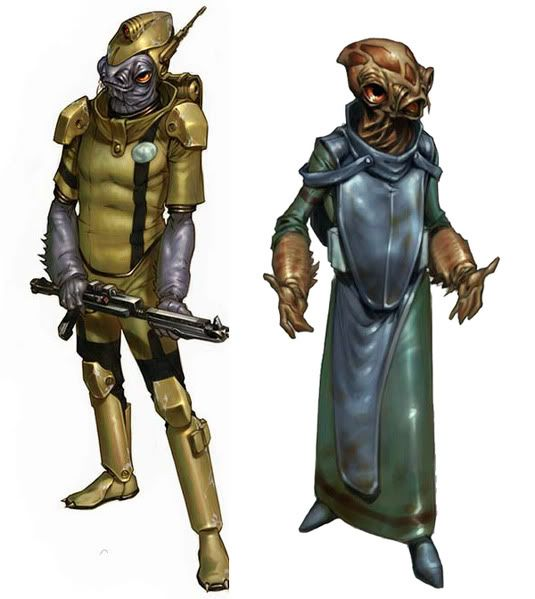

Mon Calamari
mon calamari
Special Abilities: Mon Calamari begin the game with one rank in Knowledge (Education). They still may not train Knowledge (Education) above rank 2 during character creation.
Amphibious: Mon Calamari can breathe underwater without penalty and never suffer movement penalties for traveling through water.
Artisans, dreamers, and devoted allies when they choose a cause, the Mon Calamari are one of the most respected species in the galaxy, with a long history of service to the Old Republic. Unfortunately, their planet has been utterly subjugated by the Empire. The Mon Cal are now a species enslaved to serve the Imperial war machine. Those who have escaped this fate are determined to see their planet—and the galaxy—free.
Natural amphibians, Mon Calamari live primarily above their homeworld's oceanic surface on small islands and floating cities. Their height ranges between 1.3 and 1.8 meters, and they have a very fishlike appearance, even as bipeds. This includes mottled salmon skin, large wide-directional eyes (which can move independently), webbed hands and feet, and domed skulls. Other species tend to note they have a not-unpleasant smell of sea and salt.
Mon Calamari hands are intriguing, featuring webs and clawed fingers. As well, there are three holes in their palms suggesting a vestigial suction-cup purpose from long ago. Their feet have similar structures. They are quite capable of sustained underwater living, able to breathe water and descend up to 30 meters without any equipment. Underwater breathing, however, isn't particularly comfortable for a Mon Cal; the species has been adapted to above-water life for too long. When possible, a Mon Calamari uses an engineered symbiont called an organic gill, which he also offers to any non-Mon Cal companions who wish to join him in the water. The organic gill is just one of the many amazing pieces of technology developed by this highly advanced species.
The Mon Calamari are one of the most advanced and developed species in the galaxy, despite Imperial propaganda to the contrary. Governed by a highly lawful and egalitarian representative republic system, the vast majority of Mon Cal are altruistic and giving by nature. Hard workers, determined to defend what they believe is right, and committed to aesthetics as much as industrialism, Mon Calamari are difficult not to view as a society worth emulating.
If the species has a glaring flaw, it lies with its members' tendency to be dreamers and romantics at heart. Mon Calamari have a strong tendency to favor underdogs and take on causes considered hopeless or lost by others. Though they value peace and productivity and have no love of war, their communal sense of justice and Tightness has often led them to be the first into conflicts in which they did not have to engage. Fortunately, both their immutable resolve once committed to a course of action and their inherent gifts for tactical and strategic thinking serve the Mon Cal well in combat and conflict situations.
Along with a passion for art and culture, the Mon Calamari have plenty of excellent scientists and engineers among their people. Their shipbuilding is considered on par with the best found in the Corellian Sector, though their aesthetic approach to ship design frequently puzzles other engineers.
Under the tyrannical rule of their Imperial masters, the Mon Calamari chafe with a desire to be free, and they continue to build a resistance with the Quarren, their fellow slave race on the planet Dac. It is only a matter of time before they launch a concerted effort to regain their home.
Dac (also referred to as Mon Cala, mostly by offworlders) is primarily an aquatic world, covered by one massive ocean. There are a few small islands and reefs upon which the Mon Calamari have built surface structures, but most of their cities float upon the ocean's surface. They share the planet with the Quarren, with whom they have often warred, and with other sentient races such as the Moappa and the Whaladons (all of whom keep mostly to themselves under the water). In orbit around the planet are the famed Mon Calamari Shipyards.
Both the Mon Cal and the Quarren speak Mon Calamarian as the native tongue of their world, though their long history with the Galactic Republic established Basic as a widespread language on the planet of Dac as well. Mon Calamari tend to speak Basic with a gurgling undertone, but they are still easily understood by most.
Those Mon Cal who have managed to escape slavery and join up with the Alliance are among the staunchest and most determined fighters the Rebellion has. They excel as pilots and engineers, and their natural gifts tend to lead them into Ace, Commander, and Engineer careers. Many of the more glory-minded take up a Soldier career, instead. Duties like Combat Victory, Space Superiority, and Personnel appeal most to a Mon Cal, though Tech Procurement can also appeal to some.